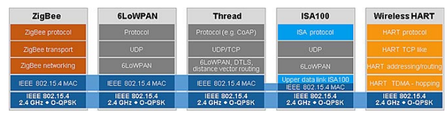

Wireless Sensor Networks and Internet of Things¶
Standardized WSN Protocols¶
- Traditional WiFi + IP too resource intensive for WSN
- 802.15.1 (Bluetooth: cable replacement)
- 1 PAN coordinator + up to 7 slaves
- Version 1.0 ... 4.x now 5.0
- BLE aka Bluetooth SMART
- Bluetooth Mesh

IEEE 802.15.4¶
- 802.15.4 designed for wireless personal area networks (home automation, cars, remote metering,…)
- Monitoring and Control
- Ease of installation but no mobility
- Low power
- protocol assumes nodes sleep most of the time
- Low transmission rates (< 250 kbps)
- Low range (< 75m max)
- 802.15.4 defines Physical and MAC layer. What to run on top of it?

MAC Overview¶
- Full Function Device (\color{darkblue}\text{FFD})
- Any topology
- Network coordinator capable
- Talks to any other device
- Reduced Function Device \color{darkred} \text{RFD}
- Limited to star topology
- Cannot become a network coordinator
- Talks only to a network coordinator
- Very simple implementation

MAC Topology¶
CSMA-CA¶
- Carrier-Sense Multiple Access Collision Avoidance
- Backoff if carrier occupied
- WiFi: Use RTS/CTS

Optional Superframe Structure¶

ZigBee¶
- Defines Network layer on top of 802.15.4
- Developed by the Zigbee alliance
- Nodes can join network, get 16 bit address
- Routing algorithm for tree (and star) and mesh topologies
- Route discovery based on distance vector algorithm
- 128-bit AES encryption
- Also provides an application layer framework for applications

http://www.chiaraburatti.org/uploads/teaching/ZigBee-Libro.pdf
6LoWPAN¶
- “Why invent a new protocol when we already have IP?”
- Developers are familiar with IP
- 16-bit addresses (ZigBee) not enough for IoT
- Developed by IEFT: 6LowPan: IPv6 over 802.15.4

- Stacked headers
- Basic header for small packets sent point-to-point or in star networks: 4 bytes (!)
- 802.15.4 MAC addresses are 64bit long (in the MAC frame)
- In IPv6, the lower 64bit (of 128 bits) can be the MAC’s address
- \to No need to repeat address in 6LowPan header (compressed header)
- Optional Fragmentation header for large packets
- Optional Mesh Networking header for mesh networks
- Basic header for small packets sent point-to-point or in star networks: 4 bytes (!)
LoRa - Long Range¶
- Long-range, low-power and low-througput
- LoRa: PHY layer, developed by Semtech
- LoRaWAN MAC layer defined by LoRaAlliance
- Range
- 2-5 km in urban environments
- > 15 km in open space
- Throughput: 0.3 kbps to 50 kbps
- LoRaWAN MAC accepts Spreading Factor (SF) of PHY to balance data rate / range / lifetime

SigFox¶
- Very long range (few km in cities, up to 40km in rural areas with directional antennas)
- Signal can reach underground objects
-
Sigfox deploys its antennas with the help of local telcos around the world
- Thus Sigfox itself takes care of coverage
- Device owners pay a subscription (1 Euro per device per year)
-
Send
- up to 140 messages per day, limit of 6 msgs/hour
- Each message can be up to 12 bytes
- Receive
- up to 4 downlink msgs per day, each of which can carry payload of 8 bytes
- Thus
- SigFox is for applications that send only small and infrequent bursts of data and receive close to nothing, like alarms and meters.

NB-IoT - Narrowband Internet of Things¶
- Narrowband Internet of Things (NB-IoT) is a secure, reliable, and efficient type of Low-Power Wide-Area (LPWA) Technology that was standardized by 3GPP and uses licensed spectrum.
- low power consumption
- low device cost
- low connectivity cost
- massive connections (tens of thousands of devices per base station)
- long range (about 5 km in dense urban areas and about 50 km in rural area)
- good signal penetration (can reach elevators inside buildings as well as basement and underground car parks)

Comparison¶
https://www.polymorph.co.za/iot-connectivity-comparison-gsm-vs-lora-vs-sigfox-vs-nb-iot/
Routing in IoT / WSN¶
- Why routing?
- Tree routing
- Directed Diffusion
- Dynamic Source Routing
- Ad Hoc On-Demand Distance Vector Routing
What is Routing¶
- Low power wireless links can be too short to reach destination in one hop
- Need to traverse multiple links to reach destination
- Routing = selecting (best) path for network traffic from source to destination
- Lots of criteria (metrics) to device what is best path
- Delivery delay
- Link load
- Router load
- ...
- In WSN we have more metrics
- Energy consumption
- Battery level of a node
- Loss probability
- ...
Traditional Routing¶
- A routing protocol sets up a routing table in routers

- A node makes a local choice depending on global topology
- What if node cannot know the global topology?
ZigBee¶
- As described, Zigbee defines Network layer & Application layer framework on top of 802.15.4.
802.15.4 devices can be:
- Full function device (FFD)
- PAN coordinator capable
- Talks to any other device
- Can act as router
- Reduced function device (RFD)
- Cannot become a PAN coordinator
- Talks only to a PAN coordinator
- Very simple implementation
ZigBee Network Layer Overview¶
When considering the network layer / ZigBee:
- Three kinds of devices
- Coordinator (unique in network)
- Router
- End device
- Three kinds of networks
- Star
- Tree
- Mesh
- RFD must be an end device
Address Assignment¶
- In ZigBee, network addresses are assigned to devices by a distributed address assignment scheme
- ZigBee coordinator defines three network parameters
- maximum number of children (C_m) of a ZigBee router
- maximum number of child routes R_m of a parent node
- depth of the network L_m
- A parent device utilizes C_m, R_m and L_m to compute a parameter C_{skip}
- used to compute size of its children's address pools
C_{skip}(d) = \left \{ \begin{array}{}
1+ C_m \cdot (L_m - d - 1), & \text{if } R_m = 1 \\
\frac {1+ C_m - R_m - C_m \cdot R_m^{L_m-d-1}} {1- R_m}, & \text{otherwise}
\end{array}\right.
- If a parent node at depth d has an address A_{parent}
- the nth child router is assigned to address A_{parent}+(n-1) \times C_{skip}(d) +1
- nth child end device is assigned to address A_{parent} + R_m \times C_{skip}(d)+n


ZigBee Routing Protocols¶
- In a star network
- No routing
- In a tree network
- Tree routing
- utilize the address assignment to obtain the routing paths
- Tree routing
- In a mesh network, two options
- Tree routing
- AODV, described later
ZigBee Tree Routing¶
- When a device receives a packet, checks if the destination is itself or one of its child devices
- If so, accept the packet or forward it to a child
- Otherwise, relay it along the tree 78

- Example
- 38 \to 45
- 38 \to 92
Directed Diffusion¶
- "How many vehicles are there in the South West quadrant?"
- How can we find the sensors that have the relevant information?
- Which routes should the queries and the responses take?

1 - Forward an Exploratory Interest¶
- Forwarding: broadcast (Flooding)
- Do not forward already resent interests
- Interests are soft state: they time out unless refreshed by the sink
- Gradient = state information for the reverse links (toward the sink)
2 - Send Exploratory Data Back¶
- Nodes with the right type of data generate event instances with the highest frequency indicated among all its gradients
- Data sent unicast on every gradient
- Nodes ignore data without matching entry in the interest cache
- Nodes check their data cache to prevent loops
3 - Positive Enforcement¶
- Once the sink has received the exploratory data
- send the original interest with the "real" frequency to the neighbor it (first) received the data from
- When a node receives an interest from existing gradient
- if request rate is higher than inflow, re-enforce a neighbor
- Select "good" neighbor (e.g. Lowest latency)
Result¶
- A path from the sink to the source (and back) has been reinforced
- Sources sends data in intervals of 10ms on this path
- It is the path with shortest delay
- Completely local decisions! No global state
- Also works with multiple sources and multiple sinks
Simulation Result¶
- ns-2 simulation of 50-250 node networks with constant average node density, 5 sources, 5 sinks
- 802.11 MAC Layer
- Compare directed diffusion to
- flooding
- omniscient multicast (shortest-path)
- Key metrics
- Average dissipated energy
- per node energy dissipation / number of events seen by sinks
- Average packet delay
- latency of event transmission to reception at sink
- Distinct event delivery
- number of distinct events received / number of events originally sent
- Average dissipated energy
Average Dissipated Energy¶
- Flooding is poor because of multiple paths from source to sink
- Diffusion is better than OM because duplicate data messages are suppressed
Average Delay¶

- Flooding has high latency due to MAC collisions
- Diffusion finds lowest-delay path (=shortest path)
Dynamic Source Routing (DSR)¶
- When node S wants to send a packet to node D, but does not know a route to D, node S initiates a route discovery
- Source node S floods Route Request (RREQ)
- Each node appends own identifier when forwarding RREQ
Route Discovery in DSR¶
Example in slides (pdf. p. 21)
\Downarrow

- Destination D on receiving the first RREQ, sends a Route Reply (RREP)
- RREP is sent on a route obtained by reversing the route appended to received RREQ
- RREP includes the route from S to D on which RREQ was received by node D
Route Reply in DSR¶

Routing in DSR¶
- Node S on receiving RREP, caches the route included in the RREP
- When node S sends a data packet to D, the entire route is included in the packet header
- hence the name source routing
- Intermediate nodes use the source route included in a packet to determine to whom a packet should be forwarded
Data Delivery in DSR¶
DSR Advantages and Disadvantages¶
- (pro) Routes maintained only between nodes who need to communicate
- (pro) A single route discovery may yield many routes to the destination
- (con) Packet header size grows with route length due to source routing
- (con) Flood of route requests may potentially reach all nodes in the network
- (con) Potential collisions between route requests propagated by neighboring nodes
- insertion of random delays before forwarding RREQ
- (con) Increased contention if too many route replies come back due to nodes replying using their local cache
- Route Reply Storm problem
Ad Hoc On-Demand Distance Vector Routing¶
- DSR includes source routes in packet headers
- Resulting large headers can sometimes degrade performance
- particularly when data contents of a packet are small
- AODV improves on DSR by maintaining routing tables at the nodes, so that data packets do not have to contain routes
- AODV retains the desirable feature of DSR that routes are maintained only between nodes which need to communicate
AODV¶
- Route Requests (RREQ) are forwarded in a manner similar to DSR
- When a node re-broadcasts a Route Request, it sets up a reverse path pointing towards the source
- AODV assumes symmetric (bi-directional) links
- When the intended destination receives a Route Request, it replies by sending a Route Reply (RREP)
- Route Reply travels along the reverse path set-up when Route Request is forwarded
Route Request in AODV¶
Examples in slides (pdf. p. 34)

\Downarrow
Forward Path Setup in AODV¶

Route Request and Route Reply¶
- Route Request (RREQ) includes the last known sequence number for the destination
- An intermediate node may also send a Route Reply (RREP) provided that it knows a more recent path than the one previously known to sender
- Intermediate nodes that forward the RREP, also record the next hop to destination
- A routing table entry maintaining a reverse path is purged after a timeout interval
- A routing table entry maintaining a forward path is purged if not used for a active_route_timeout interval
AODV Summary¶
- Routes need not be included in packet headers
- Nodes maintain routing tables containing entries only for routes that are in active use
- At most one next-hop per destination maintained at each node
- DSR may maintain several routes for a single destination
- Sequence numbers are used to avoid old/broken routes
- Sequence numbers prevent formation of routing loops
- Unused routes expire even if topology does not change
Last update:
January 10, 2021